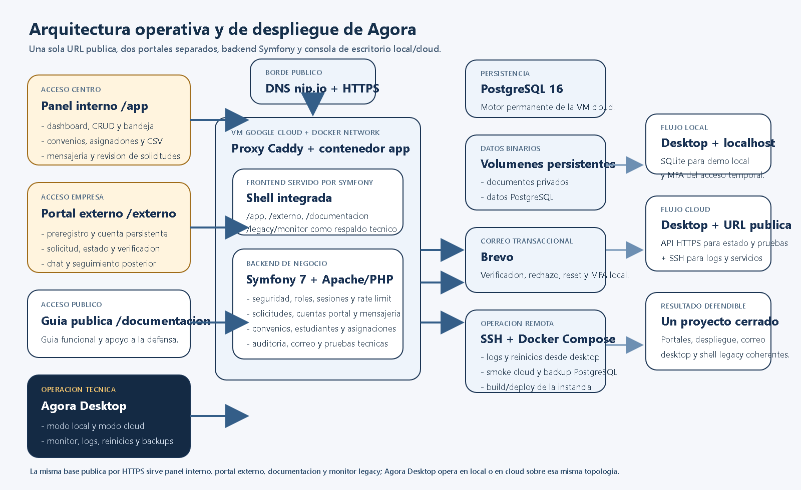
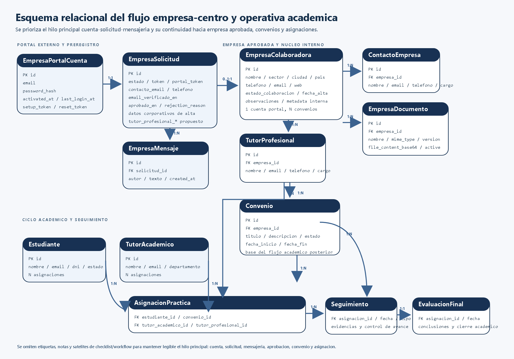
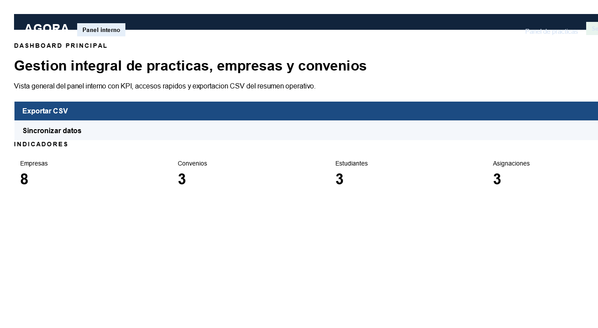
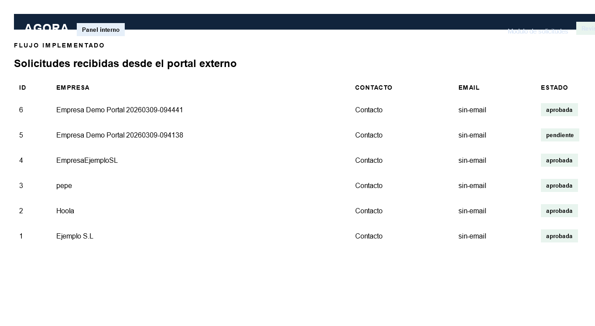
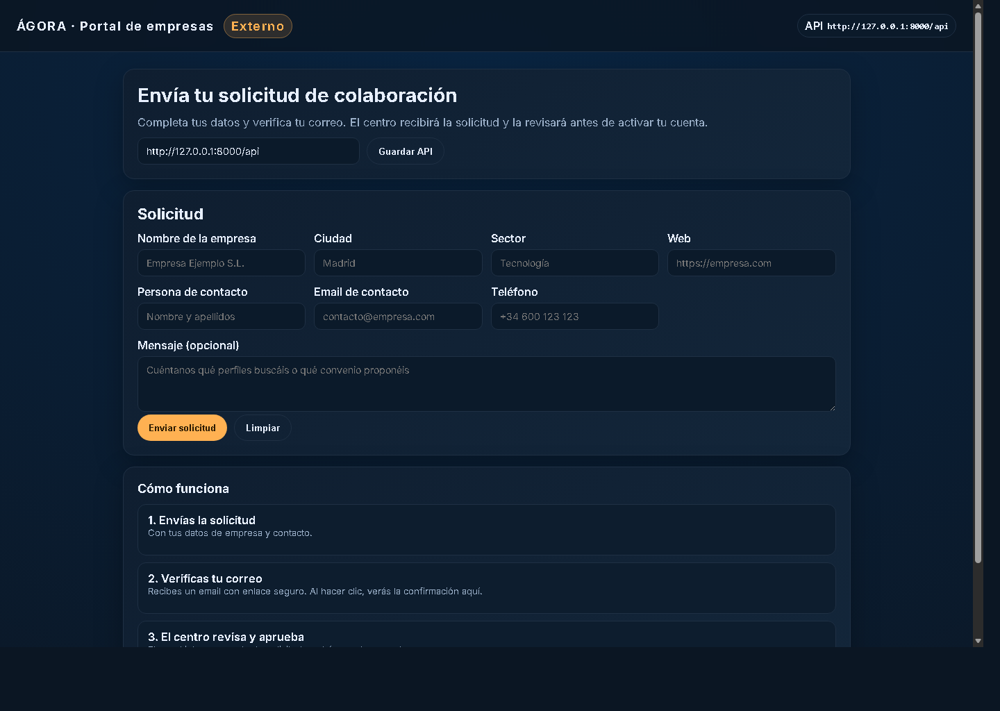
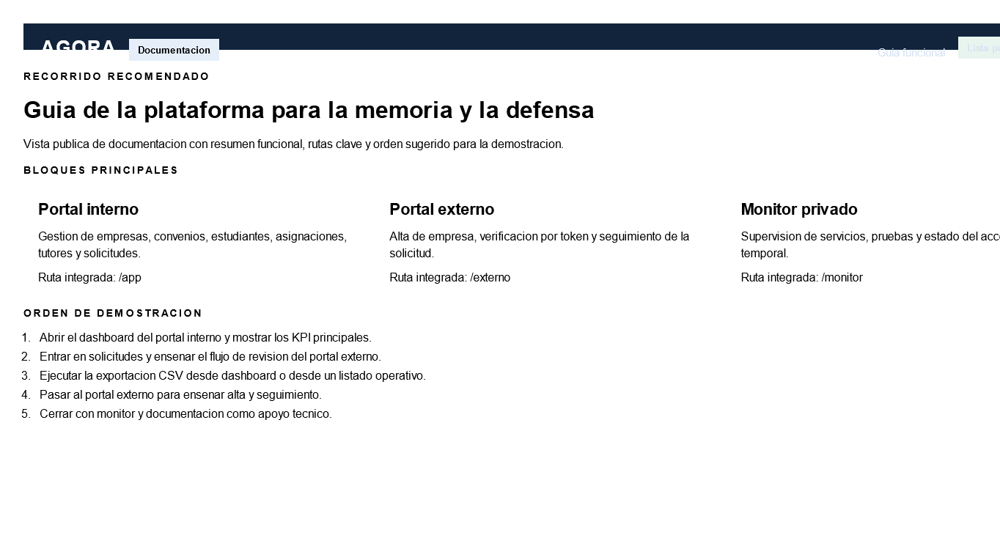
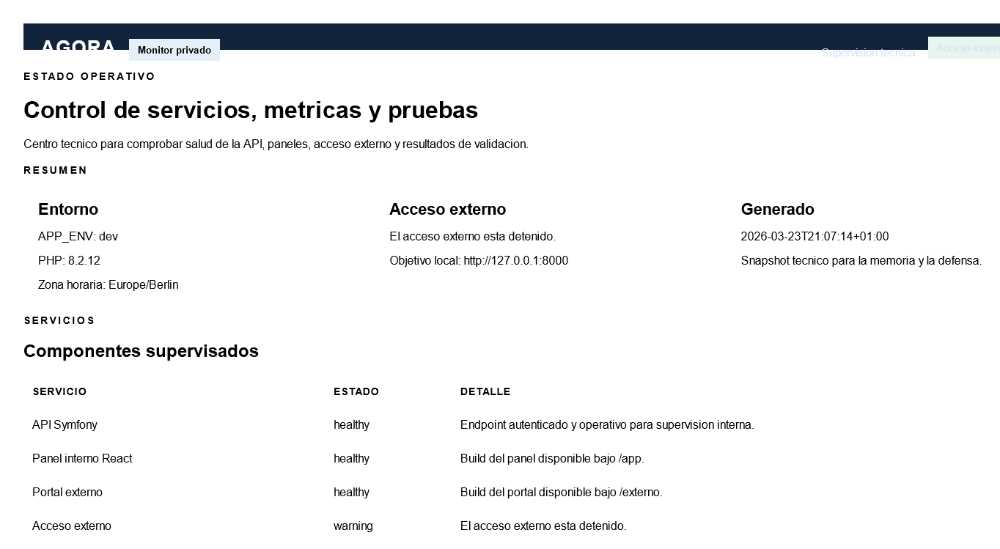

Trabajo Final de Grado
Quiero agradecer a mi tutora Elena el seguimiento continuo del trabajo, la revision critica de la memoria y la orientacion tecnica y academica durante todo el desarrollo. Tambien agradezco al centro educativo y al profesorado el contexto real aportado para orientar el proyecto hacia una necesidad concreta y utilizable. Por ultimo, agradezco a mi entorno personal el apoyo prestado durante las fases de analisis, implementacion, pruebas y cierre documental.
Este proyecto desarrolla una plataforma web para gestionar empresas colaboradoras, convenios, estudiantes, tutores y solicitudes externas en un entorno de FP Dual. La solucion se compone de una API en Symfony, un portal interno en React y TypeScript y un portal externo orientado a empresas interesadas en colaborar con el centro. La aplicacion centraliza el ciclo operativo completo: alta de empresas, revision de solicitudes, gestion de convenios, asignacion de estudiantes, supervision documental y exportacion CSV de datos operativos. La entrega final prioriza una arquitectura mantenible, separacion clara de responsabilidades y un entorno de uso demostrable con build integrada bajo una unica URL local.
Palabras clave: FP Dual, empresas colaboradoras, convenios, Symfony, React, gestion academica.
This project delivers a web platform to manage partner companies, agreements, students, mentors, and external registration requests for dual training. The solution combines a Symfony API, an internal React and TypeScript portal, and an external company portal. The platform centralizes the full operational workflow: company registration, request review, agreement management, student assignment, document supervision, and CSV export of operational records. The final delivery prioritizes maintainable architecture, clear separation of responsibilities, and a demonstrable integrated build under a single local URL.
Keywords: dual training, partner companies, agreements, Symfony, React, academic management.
La gestion de empresas colaboradoras y practicas formativas se apoyaba inicialmente en hojas de calculo, correos electronicos y documentos repartidos entre distintas carpetas. Ese enfoque provocaba duplicidades, falta de trazabilidad, escasa visibilidad sobre el estado real de las solicitudes y una dependencia excesiva del seguimiento manual. El proyecto parte de esa necesidad y reorganiza el antiguo contexto tecnico de Agora para reorientarlo hacia un problema concreto del centro educativo: controlar el alta de empresas, formalizar convenios y gestionar asignaciones de estudiantes desde una unica plataforma.
El resultado no pretende ser un prototipo aislado, sino una base operativa y ampliable. Por eso la aplicacion separa el acceso interno, el acceso externo y la API, y documenta tanto la arquitectura como la validacion tecnica necesaria para su defensa academica y evolucion futura.
Disenar e implantar una aplicacion web que centralice la gestion de empresas colaboradoras y practicas formativas, unificando informacion operativa, control documental y seguimiento de estados en una unica plataforma.
Dentro del alcance actual se incluyen el portal interno, el portal externo, la API REST, la persistencia relacional, la autenticacion del panel, la gestion de solicitudes externas, la mensajeria asociada, el control documental y la exportacion CSV de listados operativos. Quedan fuera de alcance, en esta entrega, la firma electronica avanzada, las integraciones con sistemas corporativos, un portal postaprobacion para empresas consolidadas, el almacenamiento documental en nube y una bateria E2E completa de navegador.
El centro necesita una herramienta que reduzca la fragmentacion de informacion, acelere la validacion de nuevas empresas y permita consultar en tiempo real el estado de convenios, estudiantes, asignaciones y solicitudes. El problema no es solo almacenar datos, sino garantizar continuidad operativa, trazabilidad y capacidad de supervision.
La solucion se estructura en tres piezas principales. La primera es una API REST construida con Symfony, responsable de la seguridad, la logica de negocio, la persistencia y la exposicion de endpoints. La segunda es un portal interno desarrollado con React, TypeScript y Vite, orientado a coordinacion academica y gestion operativa. La tercera es un portal externo, tambien basado en React y TypeScript, que permite registrar nuevas empresas, verificar el correo de contacto y mantener una mensajeria asociada a la solicitud.
El backend publica rutas protegidas bajo /api y rutas publicas para el registro externo y el acceso por token. En la entrega integrada, el panel interno se sirve bajo /app, la documentacion bajo /documentacion, el monitor privado bajo /monitor y el portal externo bajo /externo.

El portal interno y el portal externo se desarrollan como SPA independientes. Esta separacion permite evolucionar cada interfaz segun su contexto sin mezclar dependencias ni ciclos de despliegue. El backend se mantiene como pieza central de negocio, y los dos frontends consumen la API con responsabilidades distintas. Esta decision mejora mantenibilidad, claridad de despliegue y aislamiento funcional.
El dominio se organiza en torno a entidades nucleares como EmpresaColaboradora, Convenio, Estudiante, TutorAcademico, TutorProfesional y AsignacionPractica. Sobre ese nucleo se apoyan entidades de soporte como EmpresaSolicitud, EmpresaMensaje, EmpresaDocumento, ConvenioDocumento, ConvenioChecklistItem y ConvenioAlerta. Esta estructura permite cubrir tanto la operacion principal como las necesidades de trazabilidad y documentacion.

La seguridad del entorno interno se apoya en autenticacion y roles. El panel interno reutiliza credenciales definidas en variables de entorno para las llamadas al backend, mientras que las rutas publicas quedan limitadas al registro externo y a la validacion de enlaces asociados a solicitudes. El sistema diferencia claramente los espacios publico y privado, y deja como mejora futura la incorporacion de mecanismos mas avanzados como MFA, SSO o auditoria ampliada.
El portal interno se estructura por modulos: dashboard, empresas, convenios, estudiantes, asignaciones, tutores, solicitudes, documentacion y monitor privado. La interfaz combina tablas, tarjetas de resumen, vistas de detalle, formularios modales y exportaciones CSV desde varios puntos del sistema. El portal externo simplifica la experiencia para centrarla en el alta de empresa, la verificacion y la mensajeria. La documentacion y el monitor se separan del flujo principal para no mezclar uso funcional con supervision tecnica.





El backend concentra controladores REST para empresas, convenios, estudiantes, asignaciones y tutores, asi como rutas especificas para solicitudes externas, mensajeria asociada, exportacion CSV y supervision operativa. La persistencia se resuelve con Doctrine ORM y SQLite en desarrollo, con una configuracion facilmente adaptable a otros motores compatibles con Symfony.
El portal interno funciona como shell de gestion academica y administrativa. Desde ahi se consultan KPI, se gestionan entidades principales, se revisan solicitudes, se accede al detalle de empresas y convenios y se lanzan exportaciones CSV. La aplicacion mantiene un cliente API ligero y una organizacion modular suficiente para separar dashboard, formularios y vistas de detalle.
El portal externo ofrece una entrada clara para empresas interesadas en colaborar. Incluye formulario de alta, bandeja de verificacion, confirmacion por enlace y una mensajeria ligada a la solicitud. Su diseno es deliberadamente mas simple que el portal interno para reducir friccion en el primer contacto con la plataforma.
La exportacion CSV se implementa como funcionalidad transversal. El dashboard puede generar un resumen CSV desde frontend, mientras que los modulos principales consumen endpoints CSV especificos del backend para descargar listados de empresas, convenios, estudiantes, asignaciones, tutores y solicitudes. Este mecanismo aporta una salida operativa inmediata para trazabilidad, revision documental y defensa funcional del proyecto.
Para ejecutar el proyecto en local son necesarios PHP, Composer, Node.js, npm y los ficheros .env.local correspondientes al backend y a los dos frontends. El backend utiliza SQLite en desarrollo, por lo que no requiere un servidor de base de datos adicional para la demostracion basica.
La configuracion se apoya en variables de entorno para la URL base, las credenciales del panel interno, el entorno Symfony y las opciones de desarrollo. Esta aproximacion evita credenciales embebidas y permite reproducir el entorno con mayor control.
La entrega se prepara en modo integrado bajo una unica URL local: /app para el portal interno, /externo para el portal externo, /documentacion para la guia funcional y /monitor para la supervision tecnica. Esta organizacion simplifica la demostracion y evita depender de multiples servidores visibles durante la defensa.
La validacion del proyecto combina compilacion de frontends, pruebas automatizadas disponibles, comprobaciones HTTP sobre las rutas integradas y revisiones funcionales de navegacion, documentacion y exportacion CSV. El backend dispone de pruebas orientadas a autenticacion y controladores clave, mientras que el frontend incorpora pruebas de utilidades y servicios.
La build integrada de los dos frontends se genera correctamente y se publica en las rutas del backend. El panel interno y el portal externo quedan accesibles desde la URL local integrada, y la documentacion se mantiene separada del monitor privado. La exportacion CSV puede mostrarse como ejemplo funcional completo durante la defensa.
Aunque la base tecnica esta validada, no existe todavia una suite E2E completa de navegador. Tampoco se ha implantado una estrategia de carga automatizada o perfilado avanzado en entorno de produccion real. Estas limitaciones no impiden la defensa del proyecto, pero marcan lineas claras de mejora para una iteracion posterior.
El proyecto cumple el objetivo principal de centralizar la gestion de empresas colaboradoras y practicas en una sola plataforma, diferenciando correctamente el espacio interno, el espacio externo, la documentacion y la supervision tecnica. Ademas, deja preparado un flujo demostrable y comprensible para la tutora: solicitud externa, revision interna, gestion de entidades y exportacion de datos.
Las siguientes iteraciones deberian priorizar, por este orden, el refuerzo de seguridad, la ampliacion del ciclo de vida de empresas y tutores, la gestion avanzada de seguimientos y evaluaciones, el endurecimiento documental, la instrumentacion de rendimiento y la automatizacion E2E del sistema completo.
La aplicacion desarrollada aporta una respuesta coherente a un problema real de gestion academica y administrativa. La separacion entre backend, portal interno, portal externo, documentacion y monitor tecnico mejora claridad, mantenibilidad y capacidad de evolucion. Desde el punto de vista academico, el proyecto demuestra no solo implementacion funcional, sino tambien una preocupacion real por arquitectura, validacion, despliegue y presentacion final del producto.
docs/domain-model.md.Referencia principal: docs/anexo-a-manual-usuario.md.
Referencia principal: docs/anexo-b-manual-tecnico.md.
Referencia principal: docs/anexo-c-capturas-y-evidencias.md.
Referencias principales:
docs/anexo-d-codigo-relevante.mddocs/domain-model.mddocs/refactor-plan.mdEste anexo describe el uso funcional de la plataforma "Gestion de Empresas Colaboradoras" desde el punto de vista del usuario interno del centro y del contacto externo de empresa.
ROLE_ADMIN: administracion general del panel y acceso completo a recursos API.ROLE_API: operativa de gestion sobre empresas, convenios, estudiantes, asignaciones y solicitudes.http://localhost:5173- admin / admin123 - coordinador / coordinador123
http://localhost:5174El panel se estructura en los siguientes modulos:
Desde el dashboard se puede:
En el modulo de empresas el usuario puede:
En el modulo de convenios el usuario puede:
En el modulo de estudiantes el usuario puede:
En el modulo de asignaciones el usuario puede:
En el modulo de tutores el usuario puede:
En el modulo de solicitudes el usuario puede:
El flujo del portal externo es:
La solucion se compone de tres aplicaciones:
backend/: API Symfony 7.3 con Doctrine ORM y SQLite por defecto.frontend/app/: panel interno React 18 + TypeScript + Vite.frontend/company-portal/: portal externo React 19 + TypeScript + Vite.El repositorio no queda operativo solo con clonar desde Git. Hace falta instalar dependencias y crear los .env.local.
cd backend
copy .env.local.example .env.local
composer install
php bin/console doctrine:migrations:migrate --no-interaction
php bin/console doctrine:fixtures:load --no-interaction
symfony server:start --no-tls -d --port=8000cd frontend/app
copy .env.example .env.local
npm install
npm run dev -- --host --port 5173 --strictPortcd frontend/company-portal
copy .env.example .env.local
npm install
npm run dev -- --host --port 5174 --strictPortDATABASE_URLMAILER_DSNAPP_MAIL_FROMDEFAULT_URICORS_ALLOW_ORIGINVITE_API_BASE_URLVITE_API_USERNAMEVITE_API_PASSWORDVITE_DEV_HTTPSVITE_DEV_HTTPS_KEYVITE_DEV_HTTPS_CERTVITE_API_BASE_URLVITE_DEV_HTTPSVITE_DEV_HTTPS_KEYVITE_DEV_HTTPS_CERT/api mediante seguridad Symfony.json_login queda preparado para evolucion posterior.frontend/app/.env.local.DEFAULT_URI, CORS_ALLOW_ORIGIN y configuracion TLS opcional en ambos Vite.- ROLE_ADMIN - ROLE_API - ROLE_USER
frontend/app: React 18.3.1.frontend/company-portal: React 19.2.0.La coexistencia es valida porque ambas aplicaciones son independientes, se compilan por separado y no comparten runtime en navegador.
La base de datos por defecto es SQLite. El esquema actual se crea a partir de la migracion base:
backend/migrations/Version20251113203450.phpLa carga de datos demo se realiza mediante:
backend/src/DataFixtures/DemoDominioFixtures.phpControladores principales:
backend/src/Controller/Api/EmpresaColaboradoraController.phpbackend/src/Controller/Api/ConvenioController.phpbackend/src/Controller/Api/EstudianteController.phpbackend/src/Controller/Api/AsignacionController.phpbackend/src/Controller/Api/TutorAcademicoController.phpbackend/src/Controller/Api/TutorProfesionalController.phpbackend/src/Controller/Api/EmpresaSolicitudController.phpbackend/src/Controller/Api/EmpresaMensajeController.phpbackend/src/Controller/RegistroEmpresaController.phpbackend/src/Controller/Portal/SolicitudPortalController.phpArchivos clave:
frontend/app/src/App.tsxfrontend/app/src/components/DataTable.tsxfrontend/app/src/components/EmpresaForm.tsxfrontend/app/src/components/ConvenioForm.tsxfrontend/app/src/components/EstudianteForm.tsxfrontend/app/src/components/AsignacionForm.tsxfrontend/app/src/services/api.tsfrontend/app/src/utils/csv.tsLa exportacion CSV se realiza en cliente mediante:
frontend/app/src/utils/csv.tsActualmente se exportan:
Comandos principales:
cd backend
php bin/phpunitcd frontend/app
npm run buildcd frontend/company-portal
npm run builddocs/capturas/01-bloques-funcionalidad.pngdocs/capturas/02-esquema-relacional.pngdocs/capturas/03-panel-interno-dashboard.pngdocs/capturas/04-panel-interno-solicitudes.pngdocs/capturas/05-portal-externo.pngdocs/capturas/06-documentacion-guia.pngdocs/capturas/07-monitor-operativo.pngLas evidencias tecnicas que acompanan a la memoria y a la defensa se apoyan en estas comprobaciones:
npm run build y npm run build:backend;npm run build y npm run build:backend;/app, /externo, /documentacion y /monitor;Para que las capturas sean validas dentro de la memoria y de la presentacion final se sigue este criterio comun:
backend/config/packages/security.yamlbackend/src/Controller/Api/AuthController.phpbackend/src/Entity/User.phpbackend/src/Entity/EmpresaColaboradora.phpbackend/src/Entity/Convenio.phpbackend/src/Entity/Estudiante.phpbackend/src/Entity/AsignacionPractica.phpbackend/src/Entity/EmpresaSolicitud.phpbackend/migrations/Version20251113203450.phpbackend/src/DataFixtures/DemoDominioFixtures.phpbackend/src/Controller/Api/EmpresaColaboradoraController.phpbackend/src/Controller/Api/ConvenioController.phpbackend/src/Controller/Api/EstudianteController.phpbackend/src/Controller/Api/AsignacionController.phpbackend/src/Controller/Api/EmpresaSolicitudController.phpbackend/src/Controller/Portal/SolicitudPortalController.phpfrontend/app/src/App.tsxfrontend/app/src/components/EmpresaForm.tsxfrontend/app/src/components/ConvenioForm.tsxfrontend/app/src/components/EstudianteForm.tsxfrontend/app/src/components/AsignacionForm.tsxfrontend/app/src/components/DataTable.tsxfrontend/app/src/components/Modal.tsxfrontend/app/src/components/ToastStack.tsxfrontend/app/src/services/api.tsfrontend/app/src/utils/csv.tsfrontend/company-portal/src/App.tsxbackend/tests/Security/AuthenticationTest.phpbackend/tests/Controller/Portal/SolicitudPortalControllerTest.phpbackend/tests/Controller/Api/EmpresaSolicitudFlowTest.phpbackend/tests/Controller/Api/ConvenioControllerTest.phpbackend/tests/Controller/Api/AsignacionControllerTest.phpbackend/tests/Controller/Api/EmpresaControllerTest.phpEste anexo recoge las piezas mas representativas para explicar: